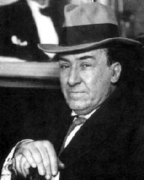

Machado y Ruiz, Antonio (1875-1939)
Uno de los poetas más importantes de la "Generación del 98".
En 1899 viaja a París, donde trabajó como traductor y conoció a Oscar Wilde y a otros poetas simbolistas y parnasianos.
Su primer libro, Soledades, aparece en 1903, y cuatro años más tarde, lo ampliará en Soledades, galerías y otros poemas. Estas primeras obras, de tono modernista, denotan la influencia de las corrientes francesas, especialmente la de Verlaine, y se caracterizan por el tono intimista, la preocupación por la muerte, el paisaje y el culto al sueño y al recuerdo.
En 1912 apareció "Campos de Castilla", obra en la que canta a la naturaleza, a España y a las gentes castellanas. En 1927 es elegido miembro de la Real Academia Española de la Lengua.
Su postura a favor de la Segunda República española provocó su evacuación a Valencia, en el año 1936. Posteriormente marcha a Barcelona, desde donde se ve obligado a pasar la frontera francesa para refugiarse en Colliure (Francia), donde muere en 1939.